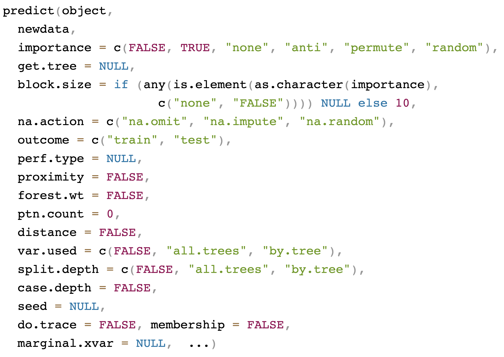

| y | cg11012046 | cg21859434 | cg23970089 | cg25176823 | cg24576735 | age | cg19099850 | cg17403875 | cg24078828 |
|---|---|---|---|---|---|---|---|---|---|
| Mesenchymal-like | 0.07659845 | 0.013786153 | 0.3651860 | 0.32445298 | 0.03255164 | 44 | 0.04020459 | 0.01333304 | 0.02021659 |
| Mesenchymal-like | 0.15108266 | 0.009155272 | 0.6024613 | 0.36269407 | 0.02215452 | 50 | 0.03771707 | 0.01045362 | 0.02098629 |
| Classic-like | 0.42735137 | 0.380247358 | 0.1984322 | 0.27367605 | 0.04060163 | 61 | 0.03648317 | 0.01304019 | 0.02570674 |
| G-CIMP-low | 0.93509040 | 0.861978174 | 0.5049500 | 0.47706717 | 0.03564740 | 20 | 0.88262115 | 0.62531752 | 0.42465204 |
| LGm6-GBM | 0.04602123 | 0.804717273 | 0.2564513 | 0.03827349 | 0.03625206 | 18 | 0.82269945 | 0.80449412 | 0.78443442 |
Tree-Based Machine Learning Methods for Prediction and Variable Selection
Part II
Hemant Ishwaran and Min Lu
University of Miami
University of Miami
Inference
| Family | Terminal Node Statistics, Prediction |
|---|---|
| Regression Quantile Regression |
mean, mean quantiles, moments, mean |
| Classification Imbalanced Two-Class |
class proportions, class proportions, Bayes classifier class proportions, class proportions, q-classifier |
| Survival | Kaplan-Meier survival, Nelson-Aalen CHF, mortality |
| Competing Risk | cause-specific CHF, cause-specific CIF, event-specific expected number of years lost |
| Multivariate Regression Multivariate Classification \(\quad\) Multivariate Mixed Regression Multivariate Quantile Regression |
per response: mean, mean per response: class proportions, class proportions, Bayes classifier same as above for Regression, Classification per response: quantiles, mean |
| Unsupervised sidClustering Breiman (Shi-Horvath) |
none same as Multivariate Mixed Regression same as Classification |
Inference
RF actually produces two ensembles!
The inbag ensemble is the averaged ensemble over the trained trees, where each tree is trained by a subsampled (bootstrap data) \[ F_{\!\text{ens}}(\mathbf{x}) =\frac{1}{B}\sum_{b=1}^B h^*_b(\mathbf{x}) \]
The out-of-bag (OOB) ensemble is case-specific. For case \(i\), the average is taken over trees where \(i\) is OOB \[ F_{\!\text{ens}}^{(i)} =\frac{1}{\#O_i}\sum_{b\in O_i} h^*_b(\mathbf{x}_i),\hskip10pt \#O_i\approx .368 B \]
The inbag ensemble is used for prediction on test data. The OOB ensemble is used for inference
OOB ensemble
- Equivalent to a leave-one-out (loo) bootstrap estimator [1]. Therefore it can be used for estimating generalization error \[ \text{Err} = \frac{1}{n}\sum_{i=1}^n L(Y_i, F_{\!\text{ens}}^{(i)}) \] For example, for regression \[ \text{Prediction Error} = \frac{1}{n}\sum_{i=1}^n (Y_i-F_{\!\text{ens}}^{(i)})^2 \]
- Avoids the need for cross-validation. Very conveniently for prediction error and for tuning the forest.
- Provides cross-validated estimator for model – a unique feature not seen with other ML methods
OOB prediction error
- Since each tree is grown from a random subset (bootstrap) of the data, the package returns both out-of-sample and in-sample predicted values from the forest, where the former are calculated using the hold out data for each tree (
$predicted.oob), and the latter are from the bootstrap data used to train the tree ($predicted) - Only
$predicted.oobshould be used for inference on the training data since they are cross-validated and will not over-fit the data.
Using the output from the Iowa Housing example from Part I:
we can get the error rate (mean-squared error) directly from the OOB ensemble by comparing the response to the OOB predictor below
Key quantities for classification
The key quantities returned by the package are
OOB classification example: Glioma
Key quantities
The key quantities returned by the package are
o$predicted ---> inbag estimated probabilities
o$predicted.oob ---> OOB estimated probabilities
o$class ---> inbag class predictions
o$class.oob ---> OOB class predictionso$predicted[1:5,] # ---> inbag estimated probabilities
> Classic-like Codel G-CIMP-high G-CIMP-low LGm6-GBM Mesenchymal-like PA-like
> [1,] 0.006 0.002 0.000 0.004 0.084 0.892 0.012
> [2,] 0.136 0.008 0.000 0.004 0.014 0.832 0.006
> [3,] 0.064 0.004 0.008 0.010 0.018 0.892 0.004
> [4,] 0.928 0.008 0.004 0.004 0.002 0.054 0.000
> [5,] 0.936 0.000 0.000 0.002 0.000 0.062 0.000
o$predicted.oob[1:5,] # ---> OOB estimated probabilities
> Classic-like Codel G-CIMP-high G-CIMP-low LGm6-GBM Mesenchymal-like PA-like
> [1,] 0.01840491 0.006134969 0.00000000 0.012269939 0.257668712 0.6687117 0.03680982
> [2,] 0.38857143 0.022857143 0.00000000 0.011428571 0.040000000 0.5200000 0.01714286
> [3,] 0.17391304 0.010869565 0.02173913 0.027173913 0.048913043 0.7065217 0.01086957
> [4,] 0.81443299 0.020618557 0.01030928 0.010309278 0.005154639 0.1391753 0.00000000
> [5,] 0.82222222 0.000000000 0.00000000 0.005555556 0.000000000 0.1722222 0.00000000
o$class[1:5] # ---> inbag class predictions
> [1] Mesenchymal-like Mesenchymal-like Mesenchymal-like Classic-like Classic-like
o$class.oob[1:5] # ---> OOB class predictions
> [1] Mesenchymal-like Mesenchymal-like Mesenchymal-like Classic-like Classic-like OOB classification example: Glioma
Tune nodesize
rfsrc(
formula, data, ntree = 500, mtry = NULL, ytry = NULL, nodesize = NULL, …)
nodesize sets the minumum size of terminal, default values are:
15 for survival
15 for competing risk
5 for regression
1 for classification
3 for mixed outcomes
3 for unsupervised
We can use tune.nodesize()
nodesize = 1 error = 11.95%
nodesize = 2 error = 8.85%
nodesize = 3 error = 8.41%
nodesize = 4 error = 12.83%
nodesize = 5 error = 11.5%
nodesize = 6 error = 14.6%
nodesize = 7 error = 12.83%
nodesize = 8 error = 15.49%
nodesize = 9 error = 14.6%
nodesize = 10 error = 17.26%
nodesize = 15 error = 15.04%
nodesize = 20 error = 18.14%
nodesize = 25 error = 18.14%
nodesize = 30 error = 22.57%
nodesize = 35 error = 27.43%
nodesize = 40 error = 28.32%
nodesize = 45 error = 32.3%
nodesize = 50 error = 34.51%
nodesize = 55 error = 50.88%
nodesize = 60 error = 50.88%
nodesize = 65 error = 50.88%
nodesize = 70 error = 50.88%
nodesize = 75 error = 50.88%
nodesize = 80 error = 50.88%
nodesize = 85 error = 50.88%
nodesize = 90 error = 74.34%
nodesize = 95 error = 74.34%
nodesize = 100 error = 74.34%
nodesize = 105 error = 74.34%
nodesize = 110 error = 74.34%
optimal nodesize: 3 Key quantities for survival
The key quantities returned by the package are
o$time.interest ---> event times (everything keys off this)
o$predicted ---> inbag estimated mortality
o$predicted.oob ---> OOB estimated mortality
o$survival ---> inbag survival estimator for each case
o$survival.oob ---> OOB survival estimator for each case
o$chf ---> inbag CHF estimator for each case
o$chf.oob ---> OOB CHF estimator for each caseOOB survival example: PBC Mayo Clinic
## load the PBC data
data(pbc, package="survival")
## remove the ID
pbc$id <- NULL
## convert to right-censoring with death as the event
pbc$status[pbc$status > 0] <- 1
## default RSF call
o <- rfsrc(Surv(time, status)~., pbc)
## choose some cases
idx <- c(11,34,60)
## plot the curves
matplot(o$time.interest,
t(o$survival[idx,]), type = "l", col=4, lwd=3,
xlab = "Days", ylab = "Survival")
matlines(o$time.interest,
t(o$survival.oob[idx,]), type = "l", col=2, lwd=3)
legend("bottomleft", legend = c("inbag", "oob"), fill = c(4,2))Key quantities
Key quantities
dim(o$chf)
> [1] 276 127
dim(o$chf.oob)
> [1] 276 127
o$chf[1:5, 1:5]
> [,1] [,2] [,3] [,4] [,5]
> [1,] 0.039904941 8.981063e-02 0.103197429 0.1338071668 0.1686493781
> [2,] 0.000000000 8.333333e-05 0.000245671 0.0003326275 0.0004976107
> [3,] 0.004064919 7.977572e-03 0.012491370 0.0227012085 0.0244150195
> [4,] 0.004566626 9.643876e-03 0.013209059 0.0146954141 0.0163487486
> [5,] 0.000000000 1.598746e-04 0.003271896 0.0052661647 0.0054040957
o$chf.oob[1:5, 1:5]
> [,1] [,2] [,3] [,4] [,5]
> [1,] 0.034459694 0.085894243 0.0978252512 0.1301985027 0.1682733452
> [2,] 0.000000000 0.000000000 0.0004719118 0.0004719118 0.0004719118
> [3,] 0.004215783 0.007519603 0.0122166452 0.0244321624 0.0264688132
> [4,] 0.005733225 0.013259881 0.0155376855 0.0168153866 0.0187680623
> [5,] 0.000000000 0.000000000 0.0037021133 0.0057619372 0.0061102479Key quantities
Connection between mortality and the CHF
Mortality for a case i equals the expected number of deaths if all patients were the same as case i. Mortality is obtained by summing the CHF
Prediction error
| Family | Prediction Error |
|---|---|
| Regression Quantile Regression |
mean-squared error mean-squared error |
| Classification Imbalanced Two-Class |
misclassification, Brier score G-mean, misclassification, Brier score |
| Survival | Harrell’s C-index (1 minus concordance) |
| Competing Risk | Harrell’s C-index (1 minus concordance) |
| Multivariate Regression Multivariate Classification Multivariate Mixed Regression Multivariate Quantile Regression |
per response: same as above for Regression per response: same as above for Classification per response: same as above for Regression, Classification same as Multivariate Regression |
| Unsupervised sidClustering Breiman (Shi-Horvath) |
none same as Multivariate Mixed Regression same as Classification |
Prediction error for classification
Error rate for the chosen performance metric is always available in obj$err.rate, however any error rate can be calculated using obj$yvar with obj$predicted.oob or obj$class.oob
- Misclassification error:
get.misclass.error - Brier error:
get.brier.error - Log-loss (cross-entropy loss):
get.logloss - AUC:
get.auc
Classification example: Glioma
Different prediction measures
Classification example: Glioma
Different prediction measures
| y | cg23970089 | cg25176823 | cg24576735 | Chr19.20co.gain | TERT.promoter.status | SNP6 | U133a | grade | age | gender |
|---|---|---|---|---|---|---|---|---|---|---|
| Mesenchymal-like | 0.36518600 | 0.3244530 | 0.03255164 | No chr 19/20 gain | Mutant | Yes | Yes | G4 | 44 | female |
| Mesenchymal-like | 0.60246131 | 0.3626941 | 0.02215452 | No chr 19/20 gain | Mutant | Yes | Yes | G4 | 50 | male |
| Mesenchymal-like | 0.44011951 | 0.3679728 | 0.03369096 | No chr 19/20 gain | Mutant | Yes | No | G4 | 56 | female |
| Classic-like | 0.06834791 | 0.3974054 | 0.03623296 | No chr 19/20 gain | Mutant | Yes | Yes | G4 | 40 | female |
| Classic-like | 0.19843219 | 0.2736760 | 0.04060163 | No chr 19/20 gain | Mutant | Yes | Yes | G4 | 61 | female |
o <- rfsrc(y~., data = glioma,
perf.type = "misclass") ## default
o
Sample size: 878
Frequency of class labels: Classic-like=148, Codel=174, G-CIMP-high=249, G-CIMP-low=25, LGm6-GBM=41, Mesenchymal-like=215, PA-like=26
Number of trees: 500
Forest terminal node size: 1
Average no. of terminal nodes: 74.302
No. of variables tried at each split: 36
Total no. of variables: 1241
Resampling used to grow trees: swor
Resample size used to grow trees: 555
Analysis: RF-C
Family: class
Splitting rule: gini *random*
Number of random split points: 10
(OOB) Brier score: 0.02333115
(OOB) Normalized Brier score: 0.19053769
(OOB) AUC: 0.99304797
(OOB) Log-loss: 0.34115074
(OOB) Requested performance error: 0.07061503, 0.06756757, 0.01149425, 0.00803213, 0.52, 0.53658537, 0.04651163, 0.11538462o <- rfsrc(y~., data = glioma,
perf.type = "brier")
o
Sample size: 878
Frequency of class labels: Classic-like=148, Codel=174, G-CIMP-high=249, G-CIMP-low=25, LGm6-GBM=41, Mesenchymal-like=215, PA-like=26
Number of trees: 500
Forest terminal node size: 1
Average no. of terminal nodes: 74.088
No. of variables tried at each split: 36
Total no. of variables: 1241
Resampling used to grow trees: swor
Resample size used to grow trees: 555
Analysis: RF-C
Family: class
Splitting rule: gini *random*
Number of random split points: 10
(OOB) Brier score: 0.02315138
(OOB) Normalized Brier score: 0.18906962
(OOB) AUC: 0.99397374
(OOB) Log-loss: 0.33892075
(OOB) Requested performance error: 0.18906962, 0.0402637, 0.01401861, 0.02455222, 0.01455572, 0.02340584, 0.06200621, 0.01026732Classification example: Glioma
We can use the OOB ensemble to construct different kind of prediction error
err <- data.frame(brier=get.brier.error(o$yvar,o$predicted.oob,FALSE),
brier.norm=get.brier.error(o$yvar,o$predicted.oob),
log.loss=get.logloss(o$yvar,o$predicted.oob),
auc=get.auc(o$yvar,o$predicted.oob),
misclass=mean(o$yvar!=o$class.oob))
rownames(err) <- "error"
err.cond <- data.frame(rbind(
c(err$brier.norm, get.brier.error(o$yvar,o$predicted.oob,TRUE,TRUE)),
c(err$misclass, get.misclass.error(o$yvar,o$class.oob))))
colnames(err.cond) <- paste0("err.", colnames(o$err.rate))
err.cond <- data.frame(metric=c("brier.norm", "misclass"), err.cond)
rownames(err.cond) <- NULLprint(t(err))
error
brier 0.02315138
brier.norm 0.18906962
log.loss 0.33892075
auc 0.99397374
misclass 0.07517084
print(err.cond)
metric err.all err.Classic.like err.Codel err.G.CIMP.high err.G.CIMP.low err.LGm6.GBM err.Mesenchymal.like err.PA.like
1 brier.norm 0.18906962 0.04026370 0.01401861 0.02455222 0.01455572 0.02340584 0.06200621 0.01026732
2 misclass 0.07517084 0.05405405 0.01724138 0.01204819 0.60000000 0.53658537 0.05116279 0.15384615Prediction error for survival
1. Harrell’s C-error rate
Extract using
obj$err.rateorget.cindexEasy to understand
Computationally expensive
Biased in the presence of heavy censoring
2. Time-varying Brier score
- Not intuitive
- Computationally inexpensive:
get.brier.survival - Unbiased and robust
3. Time-varying AUC (AUC-t)
- Easy to understand
- In principle robust
- Requires sophisticated methods for calculating (see
riskRegressionpackage)
Prediction error for survival
Time-varying brier score and AUC-t for the PBC dataset
Tip:
Code generated using plot.brier.auc
Prediction
4 major ways prediction can be used
Prediction on test data:
predict(object, testdata)Prediction on “artificial data” for partial plots:
plot.variable,partialPrediction where a new data is substituted into the trained forest:
predict(object, testdata, outcome = "test")Restoring the forest:
predict(object, ...)
General call to predict

Prediction: canonical example
Veteran’s Administration Lung Cancer Trial
Randomized trial of two treatment regimens for lung cancer [2]
| trt | celltype | time | status | karno | diagtime | age | prior |
|---|---|---|---|---|---|---|---|
| 1 | 1 | 72 | 1 | 60 | 7 | 69 | 0 |
| 1 | 1 | 411 | 1 | 70 | 5 | 64 | 10 |
| 1 | 1 | 228 | 1 | 60 | 3 | 38 | 0 |
| 1 | 1 | 126 | 1 | 60 | 9 | 63 | 10 |
| 1 | 1 | 118 | 1 | 70 | 11 | 65 | 10 |
| 1 | 1 | 10 | 1 | 20 | 5 | 49 | 0 |
| 1 | 1 | 82 | 1 | 40 | 10 | 69 | 10 |
| 1 | 1 | 110 | 1 | 80 | 29 | 68 | 0 |
| 1 | 1 | 314 | 1 | 50 | 18 | 43 | 0 |
| 1 | 1 | 100 | 0 | 70 | 6 | 70 | 0 |
Prediction: canonical example
## veteran data (with factors)
data(veteran, package = "randomForestSRC")
veteran2 <- data.frame(lapply(veteran, factor))
veteran2$time <- veteran$time
veteran2$status <- veteran$status
## split the data into unbalanced train/test data (25/75)
## the train/test data have the same levels, but different labels
train <- sample(1:nrow(veteran2), round(nrow(veteran2) * .25))> summary(veteran2[train,])
trt celltype time status karno diagtime age prior
1:18 1: 8 Min. : 3.00 Min. :0.0000 60 :7 3 : 7 60 : 3 0 :27
2:16 2:10 1st Qu.: 29.25 1st Qu.:1.0000 40 :6 2 : 6 66 : 3 10: 7
3: 9 Median : 53.50 Median :1.0000 80 :6 5 : 3 67 : 3
4: 7 Mean :104.29 Mean :0.9412 70 :4 8 : 3 69 : 3
3rd Qu.:140.25 3rd Qu.:1.0000 90 :4 1 : 2 38 : 2
Max. :389.00 Max. :1.0000 30 :3 4 : 2 48 : 2
(Other):4 (Other):11 (Other):18 > summary(veteran2[-train,])
trt celltype time status karno diagtime age prior
1:51 1:27 Min. : 1.0 Min. :0.000 60 :20 4 :17 63 :10 0 :70
2:52 2:38 1st Qu.: 21.5 1st Qu.:1.000 70 :19 2 :13 62 : 8 10:33
3:18 Median : 83.0 Median :1.000 80 :18 3 :11 64 : 7
4:20 Mean :127.3 Mean :0.932 30 :11 5 :11 65 : 7
3rd Qu.:147.5 3rd Qu.:1.000 50 :11 11 : 5 68 : 5
Max. :999.0 Max. :1.000 40 :10 12 : 5 70 : 5
(Other):14 (Other):41 (Other):61 Prediction: canonical example
## train the forest and use this to predict on test data
o <- rfsrc(Surv(time, status) ~ ., veteran2[train, ])
pred <- predict(o, veteran2[-train , ])> print(o)
Sample size: 34
Number of deaths: 32
Number of trees: 500
Forest terminal node size: 15
Average no. of terminal nodes: 1
No. of variables tried at each split: 3
Total no. of variables: 6
Resampling used to grow trees: swor
Resample size used to grow trees: 21
Analysis: RSF
Family: surv
Splitting rule: logrank *random*
Number of random split points: 10
(OOB) CRPS: 57.73879973
(OOB) stand. CRPS: 0.14842879
(OOB) Requested performance error: 0.88246269> print(pred)
Sample size of test (predict) data: 103
Number of grow trees: 500
Average no. of grow terminal nodes: 1
Total no. of grow variables: 6
Resampling used to grow trees: swor
Resample size used to grow trees: 21
Analysis: RSF
Family: surv
CRPS: 54.3104615
stand. CRPS: 0.13961558
Requested performance error: 0.49749046Prediction: canonical example
## even harder ... factor level not previously encountered in training
veteran3 <- veteran2[1:3, ]
veteran3$celltype <- factor(c("newlevel", "1", "3"))
pred2 <- predict(o, veteran3)
print(pred2)
> Sample size of test (predict) data: 3
> Number of grow trees: 500
> Average no. of grow terminal nodes: 1
> Total no. of grow variables: 6
> Resampling used to grow trees: swor
> Resample size used to grow trees: 21
> Analysis: RSF
> Family: surv
> CRPS: 60.6330452
> stand. CRPS: 0.15586901
> Requested performance error: 0.5
## the unusual level is treated like a missing value but is not removed
print(pred2$xvar)
> trt celltype karno diagtime age prior
> 1 1 <NA> 60 7 69 0
> 2 1 1 70 5 64 10
> 3 1 3 60 3 38 0Restore
Useful feature of predict making it possible to restore the original training forest
After tuning the forest, you can use predict to obtain: \[
\begin{array}{ll}
\texttt{importance} & \text{Variable Importance (VIMP)} \\
\texttt{forest.wt} & \text{Construct your own estimator} \\
\texttt{proximity} & \text{RF proximity} \\
\texttt{distance} & \text{RF distance} \\
\texttt{get.tree} & \text{Plot a tree on your browser} \\
\texttt{var.used, split.depth} & \text{Statistics summarizing variable and tree splitting} \\
\end{array}
\]
Restore
Tip
predict() can restore an object from rfsrc() with a new specification
| y | cg23970089 | cg25176823 | cg24576735 | Chr19.20co.gain | TERT.promoter.status | SNP6 | U133a | grade | age | gender |
|---|---|---|---|---|---|---|---|---|---|---|
| Mesenchymal-like | 0.36518600 | 0.3244530 | 0.03255164 | No chr 19/20 gain | Mutant | Yes | Yes | G4 | 44 | female |
| Mesenchymal-like | 0.60246131 | 0.3626941 | 0.02215452 | No chr 19/20 gain | Mutant | Yes | Yes | G4 | 50 | male |
| Mesenchymal-like | 0.44011951 | 0.3679728 | 0.03369096 | No chr 19/20 gain | Mutant | Yes | No | G4 | 56 | female |
| Classic-like | 0.06834791 | 0.3974054 | 0.03623296 | No chr 19/20 gain | Mutant | Yes | Yes | G4 | 40 | female |
| Classic-like | 0.19843219 | 0.2736760 | 0.04060163 | No chr 19/20 gain | Mutant | Yes | Yes | G4 | 61 | female |
o <- rfsrc(y~., data = glioma)
o
Sample size: 878
Frequency of class labels: Classic-like=148, Codel=174, G-CIMP-high=249, G-CIMP-low=25, LGm6-GBM=41, Mesenchymal-like=215, PA-like=26
Number of trees: 500
Forest terminal node size: 1
Average no. of terminal nodes: 73.79
No. of variables tried at each split: 36
Total no. of variables: 1241
Resampling used to grow trees: swor
Resample size used to grow trees: 555
Analysis: RF-C
Family: class
Splitting rule: gini *random*
Number of random split points: 10
(OOB) Brier score: 0.02270041
(OOB) Normalized Brier score: 0.18538666
(OOB) AUC: 0.99380046
(OOB) Log-loss: 0.33499374
(OOB) Requested performance error: 0.06719818, 0.04054054, 0.01149425, 0.00803213, 0.52, 0.48780488, 0.05581395, 0.15384615
Confusion matrix:
predicted
observed Classic-like Codel G-CIMP-high G-CIMP-low LGm6-GBM Mesenchymal-like PA-like class.error
Classic-like 143 0 0 0 0 5 0 0.0338
Codel 0 172 2 0 0 0 0 0.0115
G-CIMP-high 0 2 247 0 0 0 0 0.0080
G-CIMP-low 0 0 13 12 0 0 0 0.5200
LGm6-GBM 0 0 1 0 21 19 0 0.4878
Mesenchymal-like 12 0 0 0 0 203 0 0.0558
PA-like 0 0 0 0 0 4 22 0.1538
(OOB) Misclassification rate: 0.06605923
Random-classifier baselines (uniform):
Brier: 0.12244898 Normalized Brier: 1 Log-loss: 1.94591015p <- predict(o, perf.type = "brier")
p
Sample size of test (predict) data: 878
Number of grow trees: 500
Average no. of grow terminal nodes: 73.79
Total no. of grow variables: 1241
Resampling used to grow trees: swor
Analysis: RF-C
Family: class
Brier score: 0.02270041
Normalized Brier score: 0.18538666
AUC: 0.99380046
Log-loss: 0.33499374
Requested performance error: 0.18538666, 0.03943965, 0.01378517, 0.02434763, 0.01397218, 0.02309749, 0.06058674, 0.0101578
Confusion matrix:
predicted
observed Classic-like Codel G-CIMP-high G-CIMP-low LGm6-GBM Mesenchymal-like PA-like class.error
Classic-like 143 0 0 0 0 5 0 0.0338
Codel 0 172 2 0 0 0 0 0.0115
G-CIMP-high 0 2 247 0 0 0 0 0.0080
G-CIMP-low 0 0 13 12 0 0 0 0.5200
LGm6-GBM 0 0 1 0 21 19 0 0.4878
Mesenchymal-like 12 0 0 0 0 203 0 0.0558
PA-like 0 0 0 0 0 4 22 0.1538
(OOB) Misclassification rate: 0.06605923
Random-classifier baselines (uniform):
Brier: 0.12244898 Normalized Brier: 1 Log-loss: 1.94591015 Restore
Create your own estimator for regression
## create your own estimator for regression
o <- rfsrc(mpg~.,mtcars)
fwt <- predict(o, forest.wt="oob")$forest.wt
yhat <- c(fwt %*% o$yvar)
## compare to the OOB ensemble
print(summary(yhat - o$predicted.oob))
Min. 1st Qu. Median Mean 3rd Qu. Max.
-3.908e-14 -1.643e-14 -1.066e-14 -1.060e-14 -3.553e-15 1.066e-14
## compare prediction error to OOB ensemble
print(o)
Sample size: 32
Number of trees: 500
Forest terminal node size: 5
Average no. of terminal nodes: 3.476
No. of variables tried at each split: 4
Total no. of variables: 10
Resampling used to grow trees: swor
Resample size used to grow trees: 20
Analysis: RF-R
Family: regr
Splitting rule: mse *random*
Number of random split points: 10
(OOB) R squared: 0.76585425
(OOB) Requested performance error: 8.50513415
print(mean((yhat - o$yvar)^2))
8.505134Partial plots
Partial plots are used to understand the effect of a feature on the outcome and are essentially prediction tools
Consider nonparametric regression \[ F(x_1,\ldots,x_p) = E[Y|(x_1,\ldots,x_p)] \] To study variable \(j\) we plot \(F_j(x)\) over \(x\) where \[ F_j(x) = \frac{1}{n}\sum_{i=1}^nF_{\!\text{ens}}(x_1=x_{i1},\ldots,\color{red}{x_j=x},\color{black}\ldots,x_p=x_{ip}) \] and \[ \Bigg\{\Big(x_1=x_{i1},\ldots,\color{red}{x_j=x}\color{black},\ldots,x_p=x_{ip}\Big):\hskip10pt i=1,\ldots,n\Bigg\} \] are “test” data values equal to the training data but where coordinate \(j\) is set to \(x\)
General call to plot.variable
General call to partial
Survival example: peakVO2
The data involve 2231 patients with systolic heart failure who underwent cardiopulmonary stress testing at the Cleveland Clinic. The primary end point was all-cause death. In total, 39 variables were measured for each patient, including baseline clinical values and exercise stress test results. A key variable of interest is peak VO2 (mL/kg per min), the peak respiratory exchange ratio [3]
| ttodead | died | bun | sodium | hgb | glucose | male | black | crcl | age | betablok | dilver | nifed | acei | angioten.II | anti.arrhy | anti.coag | aspirin | digoxin |
|---|---|---|---|---|---|---|---|---|---|---|---|---|---|---|---|---|---|---|
| 1.207392 | 0 | 25.00000 | 141.0000 | 14.60000 | 89.00000 | 1 | 0 | 49.92778 | 74 | 1 | 0 | 0 | 0 | 1 | 1 | 1 | 1 | 0 |
| 3.611225 | 0 | 20.00000 | 138.0000 | 13.10000 | 90.00000 | 0 | 0 | 60.35000 | 77 | 1 | 0 | 0 | 1 | 0 | 0 | 0 | 1 | 1 |
| 0.238193 | 1 | 29.68983 | 139.8368 | 12.87517 | 98.74435 | 1 | 0 | 33.61172 | 79 | 0 | 0 | 0 | 0 | 0 | 0 | 0 | 1 | 1 |
| 10.513347 | 0 | 27.87734 | 139.4590 | 13.16225 | 136.87414 | 1 | 0 | 69.25114 | 67 | 0 | 0 | 0 | 1 | 0 | 0 | 1 | 0 | 1 |
| 3.712526 | 1 | 39.00000 | 143.0000 | 12.50000 | 104.00000 | 1 | 0 | 44.67685 | 79 | 1 | 0 | 0 | 0 | 1 | 0 | 0 | 1 | 0 |
Survival example: peakVO2
We can use plot.variable to visualize \(F_j(x)\)
o <- rfsrc(Surv(ttodead,died)~., peakVO2)
## partial effect for age
plot.variable(o, surv.type = "surv", xvar.names = "age",
time = 2, partial = TRUE)Survival example: peakVO2
## partial effect for age
plot.variable(o, surv.type = "surv", xvar.names = "age",
smooth.lines = TRUE,
time = 2, partial = TRUE)Survival example: peakVO2
## partial effect for age
plot.variable(o, surv.type = "rel.freq", xvar.names = "age",
smooth.lines = TRUE,
partial = TRUE)Survival example: peakVO2
We can use partial and get.partial.plot.data to obtain values of \(F_j(x)\)
## compare the two plots
par(mfrow=c(1,2))
plot(lowess(pdta.m$x, pdta.m$yhat, f = 2/3),
type = "l", xlab = "peak VO2", ylab = "adjusted mortality")
rug(o$xvar$peak.vo2)
matplot(pdta.s$partial.time, t(pdta.s$yhat), type = "l", lty = 1,
xlab = "years", ylab = "peak VO2 adjusted survival")
legend("bottomleft", legend = paste0("peak VO2 = ", pvo2),
bty = "n", cex = .75, fill = 1:5)Outline
Part I: Training
- Quick start
- Data structures allowed
- Training (grow) with examples
(regression, classification, survival)
Part II: Inference and Prediction
- Inference (OOB)
- Prediction Error
- Prediction
- Restore
- Partial Plots
Part III: Variable Selection
- VIMP
- Subsampling (Confidence Intervals)
- Minimal Depth
- VarPro
Part IV: Advanced Examples
- Class Imbalanced Data
- Competing Risks
- Multivariate Forests
- Missing data imputation
References
1. Efron B, Tibshirani R. Improvements on cross-validation: The 632+ bootstrap method. Journal of the American Statistical Association. 1997;92:548–60.
2. Kalbfleisch JD, Prentice RL. The statistical analysis of failure time data. John Wiley & Sons; 1980.
3. Hsich E, Gorodeski EZ, Blackstone EH, Ishwaran H, Lauer MS. Identifying important risk factors for survival in patient with systolic heart failure using random survival forests. Circulation: Cardiovascular Quality and Outcomes. 2011;4:39–45.